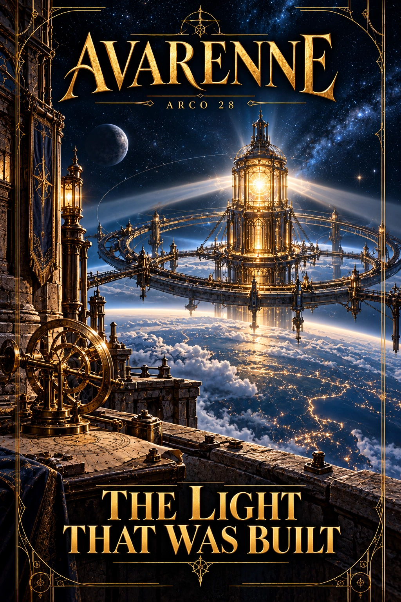

Collegamenti fra le due linee
Linea dominante. CONDIVISA_CONDIZIONALE. Questo non impone presenza o alleanza.
Accesso di Alexander. L’opera stellare appartiene al passato di Edran; il suo stato moderno richiede osservazioni e accessi attuali.
Accesso di Elias. Può cercare riferimenti e misure secondo i propri interessi, senza conoscere già l’autore antico.
Portatori possibili del contatto. Helyr Ossen (CAST-011), Serevan Ilex (CAST-080). Verificare che siano vivi, raggiungibili e in possesso dei dati necessari; la lista non è una convocazione già avvenuta.
Condizione causale. Per confrontare i risultati servono trasmissione o incontro reale. Il ricordo di avere creato la stella non equivale a sorvegliarla dopo millenni.
Se non si incontrano. Custodi e osservatori mantengono infrastrutture e raccolgono dati; le due indagini possono convergere tramite risultati scambiati, senza viaggio congiunto.
Calendario pertinente. Nessun nuovo appuntamento fissato: usare l’iniziativa e il tempo realmente attivati.. Le scadenze non aspettano Alexander e non sono ordini di viaggio.
Fronti. FRONT-05, FRONT-07, FRONT-09. Le iniziative seguono le rispettive date e i bersagli reali; non si ripetono a ogni ricorrenza editoriale.
Stato del ponte. Non inviato e non avvenuto come fatto aggiuntivo. Registrare un eventuale contatto solo quando l’iniziativa viene realmente attivata. Un arco resta utilizzabile anche senza incontro.
Capitoli previsti
42
Ambientazione
Vigil Reach e repertori di itinerario
Fatti stabiliti
Vigil non è Aster. Edran creò un’opera cosmica con interventi spaziali di Helyr.
Personaggi coinvolti
Ulteriori dettagli documentati
Volume
6
Independent initiative
Custodi mantengono collettori e itinerari; le misure remote continuano indipendentemente dal riconoscimento storico.
Choice
Visitare, corroborare a distanza, riparare o limitarsi ad attribuire.
Evoluzione
Prova sufficiente può stabilire paternità senza viaggio obbligatorio. La luce attuale non dimostra tutte le intenzioni del passato.
Misteri
M18
Opposizioni e iniziative indipendenti
Sviluppi possibili: l’attivazione richiede luogo, informazioni, mezzi e condizioni effettive. Nessuna aggressione rimane inevitabile dopo essere stata impedita.
The Black Wake
Alterare il passaggio locale con correnti e segnali, abbordare i superstiti e incendiare il deposito dei registri di carico.
Scortare o deviare la nave, rimuovere i segnali, combattere gli abbordatori e mettere al sicuro i superstiti.
The Ninth Cinder
Sabotare una pompa di sicurezza, attirare una squadra di soccorso e prendere ostaggi per imporre l’acquisto delle armi.
Disinnescare o isolare le cariche, liberare gli ostaggi e sequestrare le scorte. Nessun esplosivo colpisce se l’attivazione viene davvero impedita.
The Severed Compass
Spostare un riferimento di un corridoio raggiunto, intercettare una spedizione e sequestrare il suo cartografo.
Verificare i riferimenti, proteggere il cartografo, isolare il solo corridoio ostile o raggiungere l’avamposto con accessi propri.
Raccordo con la vita dell’Exchange
Estendere la reciprocità senza esportare un governo occulto sui nuovi interlocutori.
L’eventuale coinvolgimento dipende da contatti, informazioni e mezzi reali. La selezione dei dodici non impone ammissioni, avanzamenti o esiti di questo arco.
Ordine nell’opera
Precedente: Arco 27 — A Garden Between Worlds · Indice in ordine numerico · Successivo: Arco 29 — The Cost of a True Witness
La numerazione indica l’ordine editoriale; gli esiti della partita e le condizioni di attivazione restano aperti.
Struttura causale utilizzabile
Prove e verifica
Misure della luce, collettori e repertori di itinerario distinguono opera attuale e paternità storica. Vigil e Aster sono oggetti diversi: nessuna somiglianza di luce autorizza a confonderli.
Iniziativa indipendente
Custodi mantengono collettori e accessi. Helyr può confermare la propria partecipazione spaziale se raggiunta, ma non è obbligata a consegnare ogni itinerario o accompagnare la visita.
Diramazioni e conseguenze
Un’attribuzione può essere provata a distanza se le misure bastano. Visitare o riparare offre esperienze diverse, non tappe obbligatorie per ottenere la stessa risposta. Una riparazione riuscita migliora davvero l’opera.
Attivazione e mezzi
Per confrontare i risultati servono trasmissione o incontro reale. Il ricordo di avere creato la stella non equivale a sorvegliarla dopo millenni.
Usare inventari e ubicazioni attuali dei personaggi; il riferimento nell’arco non li trasferisce nel teatro. Applicare tempi di viaggio, riserve e accessi realmente raggiunti.
Da registrare nel checkpoint
- fatti scoperti e da chi
- messaggi spediti/ricevuti
- risorse consumate o acquisite
- decisioni autonome dei PNG
- rapporti modificati
- cause risolte e rischi ancora attivi
- data e luoghi effettivi